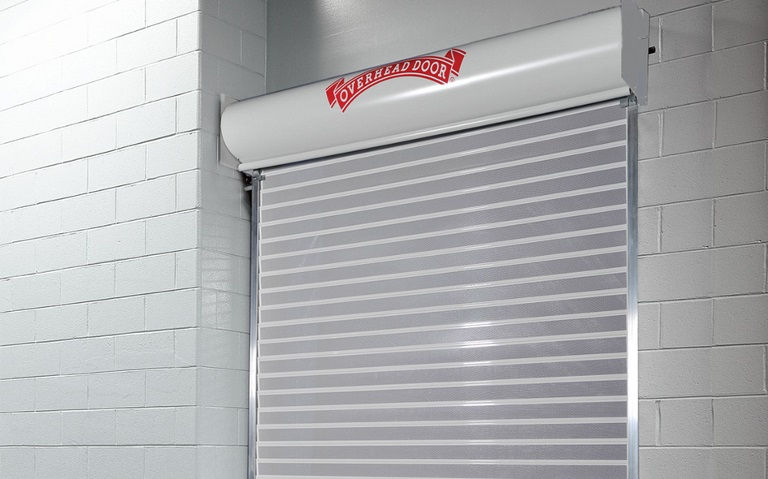

Home / Commercial doors
Commercial doors
Upward Coiling Security Grilles
Model 674 · Explore the product, compare the essentials, and discuss fit with your Amarillo team.
← Back to commercial doorsThe details.

Overhead Door™ product
The details.
A local next step.
- Material
- Steel
- Warranty
- 12 month limited
- Curtain Material
- aluminum, clear anodized
Manufacturer catalog information. Availability, options, dimensions, and compatibility must be confirmed for your project. Wind-load availability is not a project-specific rating.
Keep the information together
Documents for this product family.
Check the exact model and revision in each document before use.
Rolling Security Grille Model 674 Between Jamb Mounted CAD (DWG)CAD drawing · ZIP (DWG)Rolling Security Grille Model 674 Between Jamb Mounted CAD (PDF)CAD drawing · PDFRolling Security Grille Model 674 Face Mounted CAD (DWG)CAD drawing · ZIP (DWG)Rolling Security Grille Model 674 Face Mounted CAD (PDF)CAD drawing · PDFSpecifications - Rolling Security Grille Model 674 (doc)Specification · DOCXSpecifications - Rolling Security Grille Model 674 (pdf)Specification · PDFUpward Coiling Security Grilles Model 674 BIMBIM model · RFA
Search all 674 documents